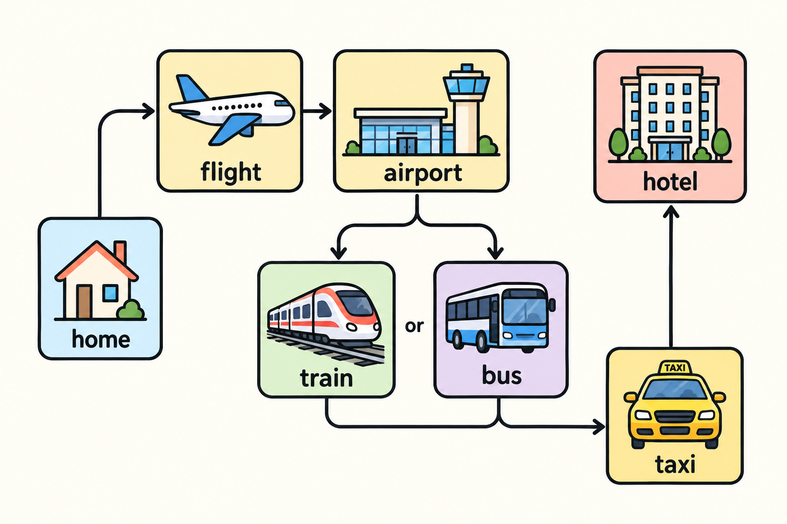
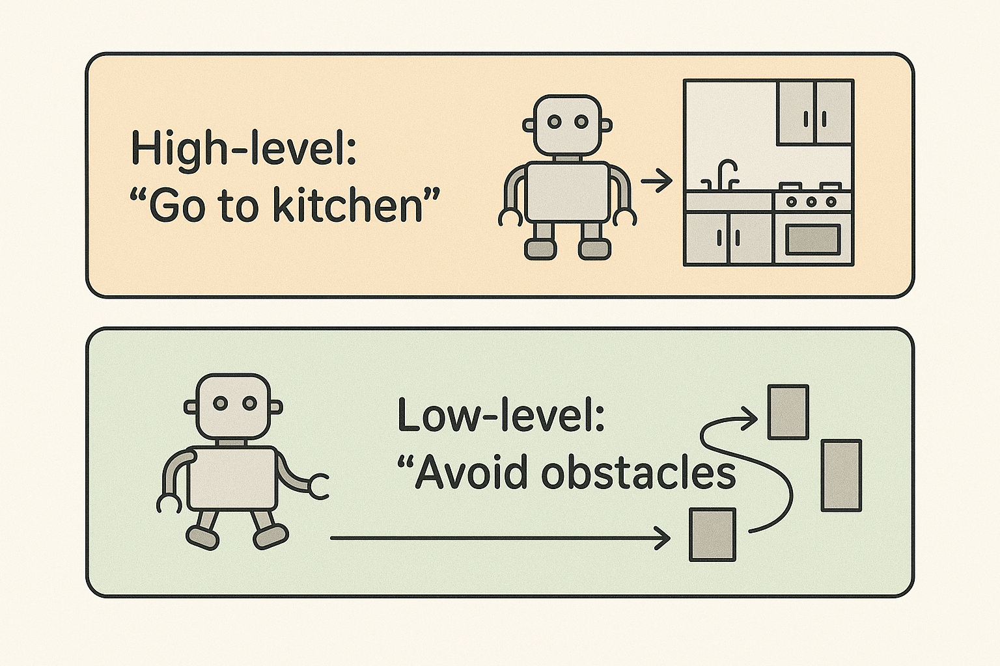
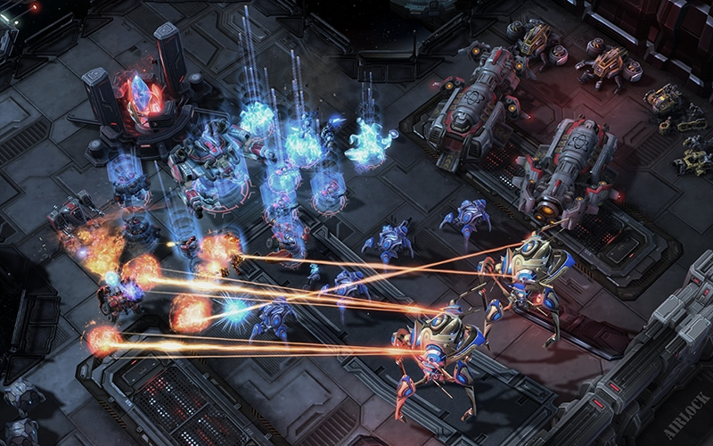
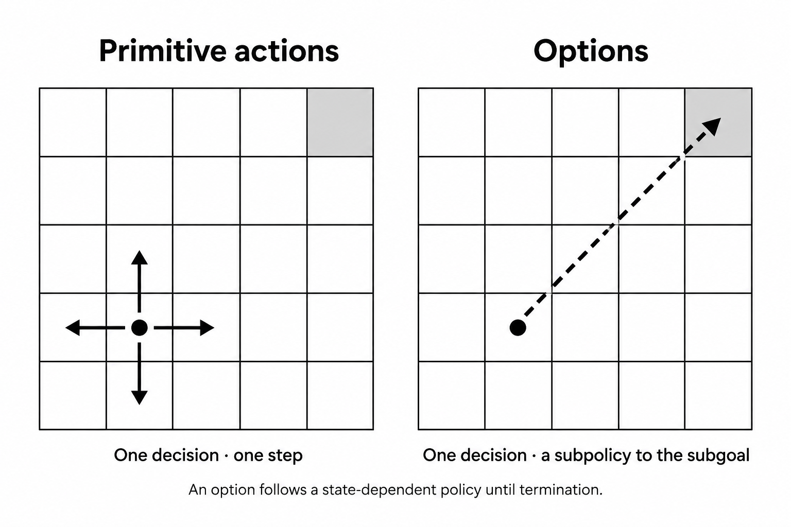
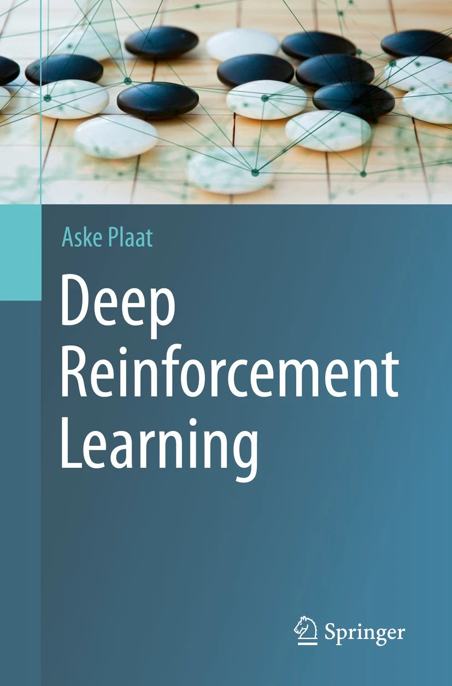
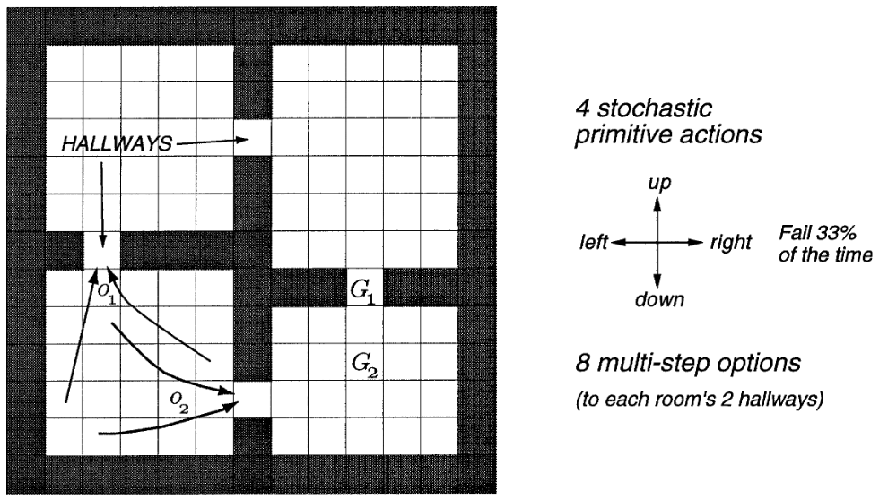
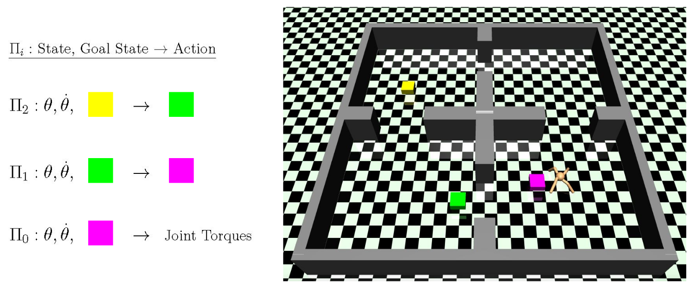

CSC 53439 EP
Lecture 3 - Advanced RL Topics
Jérémie Decock
October 9, 2026
Hello everyone, and welcome to this third lecture.
Today, we are going to look at two advanced topics in reinforcement learning.
Both are active research domains.
Outline
So, here is the plan for today.
We will cover two parts.
The first one, is about hierarchical ("hi-rar-ki-cal") reinforcement learning .
We will see how an agent can solve long and complex tasks, by breaking them into smaller subtasks.
The second part, is about reinforcement learning and LLMs .
Here we will see how RL is used to train large language models, like ChatGPT or DeepSeek-R1.
As usual, my goal is to give you an overview .
For each method, I'll only focus on the main idea .
Part 1
Hierarchical Reinforcement Learning
So, let's start with the first part: hierarchical RL .
Until now, our agents have picked one low-level action per time step.
Humans, by contrast, plan over long horizons .
So how can agents do the same?
Hierarchical RL
Introduction
Human analogy: planning a trip vs. walking to the station

Let's start with something we all do every day, without even thinking about it.
As humans, we are good at breaking down a complex task into smaller subtasks.
We solve these subtasks one by one, and together, they solve the original problem.
And what's interesting is that these subtasks live at different levels of abstraction .
For example, look at this picture: here we plan a trip from your home to a hotel, in a distant city.
At the highest level , you decide which flight to take, and which airport to land at.
Then come the mid-level decisions: from the airport, will you take the train or the bus?
After that, there are lower-level decisions, like taking a taxi for the last part of the trip.
And at the very bottom, there are your steps and your body movements.
A classical RL agent, by contrast, has none of this structure.
It would plan the whole trip one footstep at a time .
And over millions of time steps, that's hopeless.
Structuring decisions on several levels is exactly what hierarchical reinforcement learning tries to capture.
Hierarchical RL
Introduction

Here is the same idea, this time for a robot.
At the top, we have the high level .
It makes abstract decisions, like "go to the kitchen",
so it doesn't care about motors or wheels.
At the bottom, we have the low level .
It deals with the details on the way, like "avoid this obstacle".
But it doesn't need to know why the robot goes to the kitchen.
This way, each level solves a simpler problem .
The high level thinks in rooms, over a long time,
while the low level thinks in small movements, over a short time.
And that's the core idea of a hierarchy : different levels work at different time scales .
Hierarchical RL
What and Why?
Decompose complex tasks into simpler subtasksLearn policies at multiple levels of abstraction
Motivation: scalability, efficiency, transferability
So, what exactly is hierarchical RL?
This slide sums it up in three ideas.
First, we decompose a complex task into simpler subtasks .
This works because many sequential decision problems have some structure, and we can exploit it.
Second, we learn policies at multiple levels of abstraction .
A high-level policy chooses which subtask to do,
and low-level policies solve each subtask with primitive actions.
So, there are mainly three reasons to do this:
The first one is scalability : we can solve longer and harder tasks.
The second one is efficiency : we need fewer samples to learn.
And the third one is transferability : a skill learned for one task can be reused in another one.
Hierarchical RL
Applications
Some problems have natural hierarchical structure
Navigation tasks : route planning + motor controlMulti-agent systems : hierarchical team organizationRobotics : task planning + low-level controlGame playing : strategy + tactical execution
La HRL est utilisée en robotique, jeux, NLP, véhicules autonomes, etc.
So, where is it useful in practice?
Well, some problems have natural hierarchical structure .
And when this structure is clear, it's easy to exploit.
- Navigation is a good example: we plan the route at a high level, and we control the motors at a low level.
- In multi-agent systems , agents can be organized in teams, with leaders and members, like in a company.
- In robotics , we first plan the task, for example "pick up the cup, then put it in the sink". Then a low-level controller moves the arm.
- Finally, in games , a strategy game is a good example. The player chooses a global strategy, and then executes it with many tactical actions.
On other problems, however, the structure is less obvious.
And then, finding the right hierarchy is much harder.
Hierarchical RL
Advantages
Improved sample efficiency
Better exploration
Transfer and reuse of subpolicies
Scalability to complex tasks

So, what do we gain with a hierarchy?
The first gain is sample efficiency .
This is because the high level makes far fewer decisions per episode.
So its effective horizon is much shorter, and credit assignment becomes easier.
On top of that, the subpolicies are reused again and again.
The second gain is better exploration .
With random primitive actions, the agent mostly stays near its starting point.
But with random subgoals, it travels far, to really new places.
The third gain is transfer : a skill like "go through a door" can be reused in many tasks.
Finally, a hierarchy brings scalability : we can tackle much larger problems.
For instance, here in StarCraft, there is a huge number of possible actions, and games can be very long.
So a hierarchy of strategy, tactics and unit control is a natural way to handle it.
Hierarchical RL
Challenges
Find subgoals
Find a meta-policy over these subgoals
Find subpolicies for these subgoals
So Hierarchical RL is powerful, but there is a catch.
To build a hierarchy, we have to answer three questions .
The first question is: what are the good subgoals ?
In a building, for example, the doors are natural subgoals.
The second question is: how do we choose between these subgoals?
This is the role of the meta-policy , which is a policy over subgoals.
And the third question is: how do we reach each subgoal?
This is the job of the subpolicies .
Each of these three problems is hard on its own.
And ideally, we would like to learn each of them from experience .
The options framework
Sutton, R. S., Precup, D., & Singh, S. (1999).
Between MDPs and semi-MDPs: A framework for temporal abstraction in reinforcement learning.
Artificial Intelligence, 112 (1-2), 181-211.
So, how can we describe a hierarchy formally?
For that, we need a framework where actions can last for different durations .
The most famous one is the options framework .
It was introduced by Sutton and collegues in 1999 (nineteen ninety-nine) .
The idea is to add temporally extended actions , called options , to the standard MDP.
An option is a subpolicy, with its own start and stop conditions .
This way, the agent can act at different time scales .
The options framework
Motivation: Temporal Abstraction in RL
Standard MDPs only support primitive actions at each timestep.
Need: a way to represent and learn temporally extended behaviors .
Goal: extend RL framework minimally to include such temporal abstractions .
👉 Solution:
Extend standard MDPs to support temporally extended actions called options
So we need it because in a standard MDP, the agent only has primitive actions .
Each action lasts one time step, like moving one cell, or applying one torque.
But we would like to represent temporally extended behaviors ,
like "walk to the door", which takes many time steps.
So the goal is to add these temporal abstractions to the RL framework.
And we want to do it in a minimal way , so that we can keep our usual tools, like Q-learning.
The solution is to extend the MDP with temporally extended actions, called options .
The options framework
What is an Option?
Some states are designated as subgoals (e.g., doorways)
An option (macro-action) is a subpolicy that drives the agent towards a subgoal
Where an option is available, the agent can choose it instead of a primitive action
Executing an option means following its subpolicy until it terminates (e.g., at the subgoal)

The idea of options is quite simple.
First, some states are designated as subgoals ,
for example the doorways between rooms.
Then, an option , or macro-action, is a subpolicy that drives the agent to one of these subgoals.
You can see the difference on the figure .
- On the left, with primitive actions , the agent moves up, down, left or right, one cell at a time.
- On the right, with an option, one single decision takes the agent all the way to the gray cell.
Now, where an option is available, the agent can choose it, instead of a primitive action.
And executing an option means following its subpolicy until it terminates,
usually at the subgoal.
Note that an option is not a fixed sequence of actions.
In fact, the subpolicy looks at the current state at each step, so it can react to what happens.
The options framework
What is an Option?
An option $\omega$ is defined by a triple:
$$\omega = \langle I_{\omega}, \pi_{\omega}, \beta_{\omega} \rangle$$
$I_{\omega}$
The initiation set $I_{\omega} \subseteq \mathcal{S}$: the states where the option can be chosen.
$\pi_{\omega}(a|s)$
The subpolicy $\pi_{\omega} : \mathcal{S} \times \mathcal{A} \rightarrow [0, 1]$ controls which primitive actions are taken while the option runs (here a stochastic policy).
$\beta_{\omega}(s)$
The termination condition $\beta_{\omega} : \mathcal{S} \rightarrow [0, 1]$ gives the probability that $\omega$ terminates in $s$.
More formally, an option, omega, is defined by three elements .
The first one is the initiation set , I omega.
It is the set of states where the option can be started,
for example all the cells of one room.
The second one is the subpolicy , pi omega.
It chooses the primitive actions while the option is running.
Here, it's a stochastic policy, so it gives a probability for each action, in each state.
The third one is the termination condition , beta omega.
For each state, it gives the probability that the option stops there.
For example, beta can be one at the doorway, and zero everywhere else in the room.
So, in short, an option tells the agent where to start , how to act , and when to stop .
The options framework
The set of all options is denoted by $\Omega$.
Now, an agent usually has several options ,
for example one option for each doorway.
We call the set of all options capital omega .
Note that a primitive action can also be seen as a special option:
an option that lasts exactly one step .
So the agent can mix options and primitive actions in the same framework .
The options framework
There are two kinds of policies in the options framework:
The meta-policy over options $\pi_{\Omega}(\omega|s)$, which, each time the current option terminates, selects the next option to execute among those whose initiation set contains the current state.
The subpolicy of each option $\pi_{\omega}(a|s)$, which defines the behavior while the option is being executed.
So, there are two kinds of policies in the options framework.
At the top, there is the meta-policy , pi capital omega.
It is a policy over options:
each time the current option terminates, it selects the next option to run.
But it can only choose options whose initiation set contains the current state.
At the bottom, there is the subpolicy of each option, pi omega.
It chooses the primitive actions while the option is running.
In other words, the meta-policy decides what to do ,
and the subpolicy decides how to do it .
The options framework
The subpolicies $\pi_{\omega}$ act like macros: they take the agent from a state of $I_{\omega}$ to a state where the option terminates (according to $\beta_{\omega}$).
You can see the subpolicies as macros .
It's like a macro in a text editor: you run one command, and many steps are executed.
Here, a subpolicy starts in a state of its initiation set .
Then it brings the agent to a state where the option terminates , according to beta.
For the meta-policy, this whole trip counts as one single decision .
As a result, the top level makes far fewer decisions , and each one is more meaningful.
The options framework
"Temporal abstraction mix actions of different granularities, short and long, primitive actions and subpolicies.
They allow traveling from $I$ to $\beta$ without additional learning, using a previously provided or learned subpolicy."
(Plaat, 2022)

Here is a nice summary, from this book on deep reinforcement learning.
It says that temporal abstraction mixes actions of different granularities ,
short and long,
primitive actions and subpolicies.
In other words, a subpolicy lets the agent go from I to beta,
that is, from a start state to a stop state.
And this needs no additional learning ,
because it simply reuses a subpolicy that was given, or learned before .
The options framework
The rooms example

A gridworld environment with stochastic cell-to-cell actions and room-to-room hallway options.
Two of the hallway options are suggested by the arrows labeled o1 and o2.
The labels G1 and G2 indicate two locations used as goals in the experiments of the paper.
Here is the classic example from the options paper: the four rooms .
It is a gridworld with four rooms, connected by four hallways .
In this world, the agent has four primitive actions: up, down, left and right.
But these actions are stochastic : they fail one third of the time.
The hallways are bottleneck states , because you must go through them to change rooms.
That's why they are natural subgoals .
So the authors define eight hallway options : in each room, one option for each of its two hallways.
Two of the hallway options are suggested by the arrows labeled o1 and o2.
Option o1 takes the agent from anywhere in the bottom-left room to the hallway leading up.
And option o2 takes it to the other hallway, the one leading to the bottom-right room.
Finally, the labels G1 and G2 indicate two locations used as goals in the experiments of the paper.
With these options, the agent can plan room by room , instead of cell by cell.
As a result, planning and learning become much faster .
Finding subgoals and learning subpolicies
In the original options framework, these elements are given (designed by hand):
Subgoals
Subpolicies (the options)
Only the meta-policy is learned, with standard RL methods (e.g., SMDP Q-learning).
But, in practice, subgoals and subpolicies often need to be learned too.
In the original options framework, the structure of the problem is given :
the subgoals and the subpolicies are designed by hand.
So only the meta-policy is learned.
For that, we can use standard RL methods,
like SMDP Q-learning.
SMDP stands for semi-Markov decision process.
It is just Q-learning, where an option is treated like an action that lasts several time steps.
The only change is in the update:
we use the rewards collected during the option, and we discount by gamma to the power k, where k is its duration.
But, in practice, subgoals and subpolicies often need to be learned too ,
because, in real applications, nobody gives them to us.
Finding subgoals and learning subpolicies
👉 We need algorithms that can find subgoals and learn subpolicies
So, we need algorithms that can find subgoals and learn subpolicies .
Ideally, they should do it automatically, from experience only.
Let's look at some of them.
Some algorithms
For large or continuous state spaces
Feudal Networks
Option-Critic
HIRO
Hierarchical Actor-Critic (HAC)
Here are four important hierarchical RL algorithms.
They all use deep neural networks ,
so they work in large or continuous state spaces , like images or robot sensors.
The first two, Feudal Networks and Option-Critic were tested with discrete actions, for example on Atari games,
while the last two, HIRO and HAC also handle continuous actions , for robot control.
I'll give a very short overview of each one.
But I'll spend a bit more time on Hierarchical Actor-Critic ,
since it is one of the most practical and effective methods.
Feudal Networks
Key Idea:
Inspired by Feudal RL (Dayan & Hinton, 1992 ): a Manager–Worker hierarchy .
Manager sets abstract goals in a latent space.Worker executes primitive actions conditioned on these goals.
Tested on (Vezhnevets et al., 2017 ): Atari games, DeepMind Lab (3D)
Achievements:
Learned effective temporal abstractions (macro-actions).
Showed faster learning and better exploration on hard sparse-reward environments (e.g., Montezuma's Revenge) compared to a flat deep RL baseline (LSTM agent trained with A3C).
Demonstrated that latent goal vectors can guide behavior without explicit subgoal supervision.
Let's start with Feudal Networks .
The idea comes from Feudal RL , proposed by Dayan and Hinton in 1992.
Here a Manager gives orders to a Worker .
The Manager works at a slow time scale.
It sets abstract goals , as directions in a learned latent space .
The Worker, on the other hand, acts at every time step.
It chooses primitive actions to follow the Manager's current goal,
and it gets an intrinsic reward when the state moves in the direction asked by the Manager.
In 2017, DeepMind tested this on Atari games, and on DeepMind Lab, a 3D environment.
The agent learned useful temporal abstractions .
It also learned faster than a flat baseline, an LSTM agent trained with A3C,
especially on hard games with sparse rewards , like Montezuma's Revenge.
And nobody told it what the subgoals should be.
Feudal Networks
Position Today:
Popularized the goal-setting HRL paradigm in deep RL.
However: rarely used in practice now
Instability in training.
Limited scalability to very complex tasks.
Key historical impact : introduced goals in a learned latent space , with Manager and Worker trained separately (no gradient between levels), still influential in modern HRL research.
References:
Dayan, P., & Hinton, G. E. (1992). Feudal reinforcement learning. Advances in neural information processing systems, 5.
Vezhnevets, A. S., Osindero, S., Schaul, T., Heess, N., Jaderberg, M., Silver, D., & Kavukcuoglu, K. (2017). FeUdal networks for hierarchical reinforcement learning. In International Conference on Machine Learning (pp. 3540-3549). PMLR.
So, where does it stand today?
Feudal Networks popularized the goal-setting paradigm in deep hierarchical RL:
one level sets goals, and the level below tries to reach them.
However, it is rarely used in practice now,
because training is unstable , and it doesn't scale well to very complex tasks.
Its main historical impact is the idea of goals in a learned latent space .
Also, the Manager and the Worker are trained separately :
no gradient flows from the Worker to the Manager, so each level has its own learning signal.
This idea is still influential in modern hierarchical RL.
The references are on the slide: Dayan and Hinton, 1992, and Vezhnevets and colleagues, 2017.
Option-Critic
Key Idea:
A policy gradient algorithm.
Learn intra-option policies , termination functions , and a policy over options .
Tested on:
Four-room navigation domain
Atari 2600 (Arcade Learning Environment)
Pinball domain (continuous state space, discrete actions)
Achievements:
First fully differentiable framework for learning options.
Demonstrated that options can emerge naturally without hand-crafted subgoals.
Faster recovery than flat RL baselines when the goal changes (four-room); outperformed DQN on 3 of the 4 Atari games tested.
Next comes Option-Critic , by Bacon, Harb and Precup, in 2017.
Doina Precup is also one of the authors of the options framework.
Technically, Option-Critic is a policy gradient method.
Its key idea is to learn everything at once :
the intra-option policies, the termination functions , and the policy over options.
All of them are learned with policy gradients, end to end ,
so there is no need to define subgoals by hand.
It was tested on the four-rooms domain, on Atari games, and on Pinball,
which has a continuous state space, with discrete actions.
So, what were the results?
It was the first fully differentiable framework to learn options.
It also showed that options can emerge naturally , with no hand-crafted subgoals.
In the four rooms, when the goal moves, it recovers faster than flat agents.
And on Atari, it beat DQN on three of the four games they tested.
Option-Critic
Position Today:
A foundational baseline for HRL; many later works extend it (e.g., option discovery, regularization, diversity constraints).
Still conceptually influential, though modern state-of-the-art often favors skill discovery methods (e.g., DIAYN, VALOR) or hierarchical RL with pretrained skills .
References:
Today, Option-Critic is a foundational baseline for hierarchical RL.
And many later works extend it,
for example to discover better options, to regularize them, or to make them more diverse.
Why do we need to regularize them?
Because, without constraints, the options tend to terminate at every step , or one option ends up doing everything.
In both cases, there is no real hierarchy anymore.
Still, Option-Critic remains very influential as an idea.
But modern methods often prefer skill discovery , like DIAYN or VALOR.
These methods first learn a set of diverse skills, without any reward .
Other methods use hierarchical RL with pretrained skills .
HIRO
Key Idea:
Off-policy correction: past high-level goals are relabeled with the goal that best explains the low-level actions actually taken, under the current low-level policy → both levels can be trained off-policy despite the changing low level → improves sample efficiency.
Tested on:
MuJoCo Ant tasks (Ant Gather, Ant Maze, Ant Push, Ant Fall).
Achievements:
Demonstrated significant gains in sample efficiency vs. previous HRL methods (a flat agent makes almost no progress on these tasks).
Learned complex long-horizon behaviors (e.g., pushing a block out of the way to reach the goal).
Next comes HIRO , by Nachum and colleagues, at Google, in 2018.
The name stands for HIerarchical Reinforcement learning with Off-policy correction.
It has two levels: a high-level policy proposes goals, and a low-level policy tries to reach them.
Here, the challenge is to train both levels off-policy , with a replay buffer, to be sample-efficient .
The problem is that the low-level policy keeps changing.
So an old high-level transition is no longer valid : the same goal would now produce different actions.
To fix this, HIRO uses an off-policy correction : it relabels the old goals.
Each old goal is replaced by the goal that best explains the low-level actions actually taken,
under the current low-level policy.
It was tested on MuJoCo Ant tasks: Ant Gather, Ant Maze, Ant Push and Ant Fall.
There, it was much more sample-efficient than previous hierarchical methods.
By comparison, a flat agent makes almost no progress on these tasks.
Finally, HIRO learned complex long-horizon behaviors , like pushing a block out of the way to reach the goal.
HIRO
Position Today:
Considered a foundational baseline for HRL.
Later methods (e.g. HRAC, HIGL, HiPPO) refine stability, exploration, or scalability.
Still cited as one of the most influential HRL approaches for long-horizon continuous control.
References:
Nachum, O., Gu, S. S., Lee, H., & Levine, S. (2018). Data-efficient hierarchical reinforcement learning. Advances in neural information processing systems, 31.
Related work:
Nachum, O., Gu, S., Lee, H., & Levine, S. (2018). Near-optimal representation learning for hierarchical reinforcement learning. arXiv preprint arXiv:1810.01257.
Today, HIRO is considered a foundational baseline for hierarchical RL.
Since then, later methods have refined it, for example HRAC, HIGL, or HiPPO.
They improve its stability , its exploration , or its scalability .
Even so, HIRO is still cited as one of the most influential approaches for long-horizon continuous control .
The main paper is on the slide: "Data-efficient hierarchical reinforcement learning", from 2018.
The same authors also published a related paper, on how to learn a good representation for the goals.
Hierarchical Actor-Critic
Key Idea:
Train multiple policy levels, each setting goals for the level below.
Use hindsight at every level: hindsight action transitions (the proposed subgoal is replaced by the state actually reached) to cope with non-stationarity, and Hindsight Experience Replay to cope with sparse rewards.
Tested on:
Achievements:
Can learn more than two hierarchical levels.
Jointly learns multiple levels of policies in parallel (subproblems can be solved simultaneously).
Finally, let's look at Hierarchical Actor-Critic , or HAC, by Levy and colleagues.
Its key idea is to train several levels of policies,
where each level sets goals for the level below,
and the lowest level outputs the actual actions.
The difficulty is that all levels learn at the same time .
So, for a high level, the level below is non-stationary, because its behavior keeps changing.
HAC solves this with hindsight , at every level.
The first trick is called hindsight action transitions .
When a high level proposed a subgoal, we replace it by the state that was actually reached .
This way, from the high level's point of view, the level below looks like an optimal and stable policy.
The second trick is Hindsight Experience Replay , against sparse rewards:
a failed attempt becomes a success, for the goal that was actually reached.
HAC was tested on MuJoCo tasks,
and it can learn more than two levels , all in parallel.
Hierarchical Actor-Critic
Position Today:
Pioneering work: first to learn 3-level hierarchies in parallel in tasks with continuous state and action spaces.
Inspired many follow-ups in hierarchical goal-conditioned RL.
References:
HAC is a pioneering work :
it was the first method to learn three-level hierarchies in parallel, in tasks with continuous states and actions.
It also inspired many follow-ups in hierarchical goal-conditioned RL .
Here, goal-conditioned means that the policy takes as input the state, and also the goal to reach.
The reference is on the slide: Levy, Konidaris, Platt and Saenko.
It was first posted on arXiv in 2017, and then published at ICLR in 2019.
Hierarchical Actor-Critic

Source: Learning multi-level hierarchies with hindsight , Levy et al., 2017.
Here is how it works, on a concrete task.
An ant robot must go through four rooms, to reach the yellow box ,
which is the task goal.
On the left, you can see the three levels .
Each policy takes as input the current state, that is, the joint angles theta and their velocities theta dot, plus a goal.
The top level, pi two, gets the yellow goal, and outputs a subgoal: the green box .
Then the middle level, pi one, gets the green goal, and outputs a closer subgoal: the magenta box .
Finally, the bottom level, pi zero, gets the magenta goal, and outputs the joint torques .
This way, each level only has to solve a short-horizon problem: reaching a goal that is close.
And together, they solve a long task.
Hierarchical Actor-Critic
Examples
Source: Learning multi-level hierarchies with hindsight , Levy et al., 2017.
Let's watch it in action, with the authors' video.
[play the video]
The colors are always the same in this video.
Yellow is the task goal ,
while green and magenta are the subgoals set by the higher levels.
It starts with a grid world, then an inverted pendulum, and a robot arm.
Each time, you first see a two-level agent, and then a three-level agent.
Next comes Ant Reacher , where the ant must reach the yellow box.
At the end, look at the one-level agent , the flat one: it barely moves.
And finally, there is Ant Four Rooms .
Look at the subgoals: they are often placed near the doorways .
It's just like the hallway options of the four-rooms example, except that here, they are learned , not given.
And again, at the end, the flat agent does not reach the goal.
Part 2
Reinforcement Learning and LLMs
OK, let's move on to the second part: RL and LLMs .
You all use chatbots like ChatGPT,
and as you may know, reinforcement learning is a key step in their training.
So let's see where it comes in, and how it works.
Overview
Source: Julia Turc
So, to begin with, here is the big picture of how a modern large language model is trained.
As you can see, there are several stages, from left to right.
It starts with pre-training , followed by instruction fine-tuning .
These two stages use self-supervised and supervised learning.
Then come preference fine-tuning and reasoning fine-tuning .
And if you look at the black area on the right, you see that these two stages use reinforcement learning .
Above each model, there is an example of what it answers.
So let's go through these stages, one by one.
Overview
Source: Julia Turc
The model is first trained using self-supervised learning on a massive amount of text data.
It all starts with a randomly initialized model .
If you say "Hello!" to it, it answers random tokens.
So, the model is first trained using self-supervised learning on a massive amount of text data.
Its task is simple: it must predict the next token .
No labels are needed, because the text itself is the supervision.
This stage is the pre-training , and it is the most expensive one in compute.
Overview
Source: Julia Turc
This produces a sophisticated auto-completer that cannot easily interact with humans.
This produces a base model , which is very good at completing text .
For example, if you write "It's raining cats and", the model continues with "dogs. I should get an umbrella."
But it is essentially a sophisticated auto-completer .
It cannot reliably answer questions, or follow instructions ,
and it cannot hold a natural conversation either.
In fact, if you ask it a question, it may just continue with more questions.
Overview
Source: Julia Turc
To make the model more useful we apply instruction fine-tuning or Supervised Fine-Tuning (SFT)
To make the model more useful, we apply instruction fine-tuning , or supervised fine-tuning , SFT.
In other words, we fine-tune it with supervised learning .
For that, we use a dataset of instructions , paired with high-quality answers written by humans.
Then we train the model to imitate these answers.
It is the same next-token prediction as before, but on carefully chosen data.
This way, the model learns the format of a dialogue: a question, then a helpful answer.
Overview
Source: Julia Turc
Now the model can follow instructions, answer questions, and chat more naturally.
The result is an instruction-tuned model .
Now the model can follow instructions , answer questions, and chat more naturally.
For example, if you ask it "What ice cream should I get?", it gives a real answer: "Vanilla is the best flavor in the world."
But it may still generate outputs that are misaligned with human preferences .
These answers may be correct, but they are not the ones people prefer.
Or they may be unhelpful, wrong, or even harmful .
And, as we'll see, SFT alone can't easily fix this.
Overview
Source: Julia Turc
A second stage of fine-tuning is applied.
Historically, OpenAI used PPO within the Reinforcement Learning from Human Feedback (or RLHF) framework to achieve this.
So, a second stage of fine-tuning is applied.
It is called preference fine-tuning , and it is the first stage where reinforcement learning comes in.
Look at the example: it's the same question, but now the answer is "Chocolate is the best flavor".
Why chocolate?
Simply because, in our little example, that's what people prefer .
So the model now gives the answers that humans like best.
Historically, OpenAI did this with PPO , Proximal Policy Optimization,
inside a framework called Reinforcement Learning from Human Feedback , or RLHF.
Preference-based fine-tuning
Motivations
Why do we need a second stage of fine-tuning?
Supervised fine-tuning alone cannot guarantee outputs that are fully aligned with human preferences.Collecting larger, high-quality human-labeled datasets is too expensive or impractical .
Preference-based fine-tuning only asks humans to compare model outputs (which answer is better?) instead of writing ideal answers → much cheaper .
So, why do we need this second stage?
There are mainly two reasons.
First, supervised fine-tuning alone cannot guarantee outputs that are fully aligned with human preferences.
Second, there is the cost of data .
To go further with SFT, we would need larger datasets of high-quality answers, written by humans,
and that's too expensive , or just impractical.
Preference fine-tuning, by contrast, uses another kind of human feedback .
Here, the annotator doesn't write the ideal answer.
Instead, they just compare a few answers generated by the model, and say which one is better.
This is much cheaper , and faster.
It also works when people can recognize a good answer more easily than they can write one.
Think of a poem, or a good summary: it's easy to judge, but hard to write.
Preference-based fine-tuning
With RLHF/PPO
So, let's see how preference fine-tuning works with RLHF and PPO .
But first, we need to take a step back, and generalize the RL framework a little bit.
This is because, for a chatbot, there is no reward function given by the environment.
Learn from feedback
A generalization of the RL framework
RL agents need feedback to learn preferred behaviors
Usually provided by a reward function (maps states/actions to scalar values)
Explicit reward functions can be hard to design in real-world tasks Alternative feedback sources (e.g., human preferences, demonstrations) can guide learning
This generalizes RL to "learning from feedback "
Source: Z. Xiao, Reinforcement Learning, https://doi.org/10.1007/978-981-19-4933-3_16
To learn, an RL agent needs feedback , that is, some signal that tells it which behaviors are preferred.
Usually, this feedback is a reward function , which maps states and actions to a scalar value.
But in many real-world tasks, an explicit reward function is very hard to design .
For example, what is the reward for a "good" answer of a chatbot?
In such cases, we can use other kinds of feedback to guide learning,
like human preferences, or demonstrations.
You can see this on the diagram.
We still have the usual loop: the agent acts on the environment, and receives observations.
But in the middle, there is a new box: the feedback provider .
It watches the observations and the actions, and it sends feedback to the agent.
So this generalizes RL to "learning from feedback ".
Reward Model
A quick introduction
When a reward function is unavailable, we may learn a reward model from data (e.g., expert demonstrations, human preferences).
Use the reward model’s output as reward signals for RL algorithms.
Learning it from expert demonstrations is known as Inverse Reinforcement Learning (IRL) .
IRL will be covered in more detail next week.
So, what can we do when no reward function is available?
Well, we can learn one.
We train a reward model from data,
and then we use its output as the reward signal for a standard RL algorithm.
But what kind of data can we use?
For example, learning it from expert demonstrations is known as Inverse Reinforcement Learning ,
or IRL for short.
The idea is to infer the reward that the expert seems to optimize.
We'll come back to IRL in more detail later in the course.
In the next slides, though, the reward model is learned from another kind of data: human preferences .
PbRL: Preference-based RL
Key Idea:
Instead of scalar rewards, use preferences over trajectory segments as feedback.
Train a reward model to predict which segment is preferred.
Use the learned reward model to provide reward signals for RL algorithms.
Enables learning from comparative feedback rather than absolute rewards.
👉 When the environment does not provide a reward function , but a preference feedback , we do Preference-based RL (PbRL).
Here is one example of feedback that is not a scalar reward: preferences .
The idea is to show two trajectory segments to someone, and to ask which one they prefer.
Then we train a reward model to predict these preferences,
so that the preferred segment gets a higher total reward .
Technically, the probability of preferring A over B is a sigmoid of the difference of their rewards.
Finally, the learned reward model provides the reward signal for the RL algorithm.
In other words, we learn from comparative feedback , not from absolute rewards.
This helps, because it's often easier to say "A is better than B" than to give a score, like 7 out of 10.
So, when the environment does not provide a reward function, but a preference feedback , we do Preference-based RL .
RLHF
Reinforcement Learning from Human Feedback
Source: https://openai.com/index/learning-from-human-preferences/
👉 When this preference feedback is provided by a human during training, we do Reinforcement Learning from Human Feedback (RLHF)
And when this preference feedback is provided by a human during training, we do Reinforcement Learning from Human Feedback ,
or RLHF for short.
Let's look at the diagram.
At the bottom, there is the usual RL loop: the RL algorithm sends actions to the environment, and gets observations.
But this time, the reward does not come from the environment.
Instead, it comes from a reward predictor , in purple.
This reward predictor is trained with human feedback , on the right,
and it gives a predicted reward to the RL algorithm.
All three processes run in parallel , asynchronously:
the agent acts, the human compares clips, and the reward predictor is updated.
RLHF
Reinforcement Learning from Human Feedback
Source: https://openai.com/index/learning-from-human-preferences/
RLHF introduced by OpenAI and DeepMind (2017) for simulated robots and Atari games.
First, agent acts randomly; human compares pairs of video clips and selects the one closer to the objective (e.g., backflip).
Algorithm learns a reward function that matches human preferences.
Uses RL to optimize agent behavior toward the learned goal.
Continually requests human feedback on uncertain trajectory pairs to refine the reward model.
High feedback efficiency: backflip task required less than 1000 bits of human feedback.
RLHF was introduced in 2017, by OpenAI and DeepMind .
At first, it was not used for language at all, but for simulated robots and Atari games.
Here is how it works.
In the beginning, the agent acts randomly.
Then, periodically, a human watches two short video clips of its behavior, like the two on the slide,
and clicks on "left is better", or "right is better".
The question is: which clip is closer to the objective?
In this case, the objective is to do a backflip .
From these choices, the algorithm builds a model of the goal: the reward function that best explains them.
Then it uses RL to reach that goal.
And as it improves, it asks for feedback on the pairs where it is most uncertain .
This makes it very efficient in human feedback: the backflip needed only about 900 bits of feedback,
where one bit is roughly one comparison, left or right.
RLHF
Reinforcement Learning from Human Feedback
Source: https://openai.com/index/learning-from-human-preferences/
And here is the result: a backflip .
It took less than an hour of a human evaluator's time,
and there was no explicit reward function at all.
Just try to write a reward function for a nice backflip by hand: it's really hard!
Here, by contrast, the human just had to recognize good attempts.
To be fair, though, it's not cheap in interactions with the environment :
in the background, the agent collected about 70 hours of simulated experience.
RLHF
Application to LLMs
Source: https://x.com/nathanlents/status/1735034140930572791
RLHF was first developed for training robots and Atari agents.
Quickly adapted for large language models (LLMs).
ChatGPT users regularly see feedback requests.
User feedback is leveraged to further align LLMs via RLHF.
OK, so RLHF was first developed for training robots and Atari agents.
But it was quickly adapted to large language models .
In fact, you have probably seen this in ChatGPT : "Which response do you prefer?"
This is exactly a preference comparison .
And this free work from users can then be used to further align the model.
RLHF
Application to LLMs
Source: Stiennon, N., Ouyang, L., Wu, J., Ziegler, D., Lowe, R., Voss, C., ... & Christiano, P. F. (2020). Learning to summarize with human feedback. Advances in neural information processing systems, 33, 3008-3021.
In 2020, OpenAI used RLHF to train models to summarize text .
This figure shows the three steps of RLHF.
The first step is to collect human feedback .
We take a Reddit post, and several policies generate summaries of it.
Then a human compares two of these summaries, and says which one is better: "j is better than k".
The second step is to train a reward model .
This model gives a score r to each summary,
and the loss pushes the score of the preferred summary above the other one.
More precisely, we maximize the log of a sigmoid of r j minus r k.
The third step is to train the policy with PPO .
For a new post, the policy writes a summary, and the reward model scores it.
Then PPO uses this score as the reward to update the policy.
On top of that, a KL penalty keeps the policy close to the initial model, to avoid reward hacking.
RLHF
Application to LLMs
Source: Ouyang, L., Wu, J., Jiang, X., Almeida, D., Wainwright, C., Mishkin, P., ... & Lowe, R. (2022). Training language models to follow instructions with human feedback. Advances in neural information processing systems, 35, 27730-27744.
Then, in 2022, OpenAI used it to train InstructGPT ,
a GPT-3 model fine-tuned to follow instructions with human feedback.
It is the direct predecessor of ChatGPT .
Here again, there are three steps.
In step one, for a prompt like "explain the moon landing to a 6 year old", a labeler writes the desired answer,
and GPT-3 is fine-tuned on these answers: that's SFT .
In step two, the model generates several answers, and a labeler ranks them, from best to worst.
These rankings are used to train the reward model .
And in step three, PPO optimizes the policy against this reward model.
So this is exactly the full pipeline of the overview: SFT first, then preference fine-tuning with RL.
RLHF
Application to LLMs
Source: Ouyang, L., Wu, J., Jiang, X., Almeida, D., Wainwright, C., Mishkin, P., ... & Lowe, R. (2022). Training language models to follow instructions with human feedback. Advances in neural information processing systems, 35, 27730-27744.
So, did it work?
Yes: human evaluators clearly preferred InstructGPT to GPT-3.
On this plot, the y-axis is the win rate against the 175-billion-parameter SFT model,
that is, how often each model's answers were preferred to that model's answers.
And the x-axis is the model size.
At the bottom, the two GPT-3 curves, in blue, stay low, even with a good prompt.
Above them, in green, are the SFT models.
And at the top, there are the two RLHF models: PPO , and PPO-ptx , the actual InstructGPT.
PPO-ptx also mixes some pretraining gradients into the PPO updates,
in order to limit regressions on standard NLP benchmarks.
And here is the key result:
the 1.3 billion InstructGPT is preferred to the 175 billion GPT-3,
which is a model more than 100 times larger!
RLHF
Advantages and drawbacks
Advantage:
Compared to offline preference fine-tuning methods such as Direct Preference Optimization (DPO), the Reward Model can score new outputs generated by the policy during training → well-tuned RLHF often performs better with the same human feedback.
Drawbacks:
Training can be unstable; the Reward Model may be inaccurate, leading to misaligned or unintended behaviors.
The PPO policy may exploit Reward Model weakness (reward hacking).
So, why use RL here, and not something simpler?
Well, RLHF has one big advantage over offline methods, like Direct Preference Optimization , or DPO.
DPO learns only from a fixed dataset of compared answers.
In RLHF, by contrast, the learned reward model can score new answers , generated by the policy during training.
So the same human feedback is exploited further,
and, as a result, well-tuned RLHF with PPO often performs better than DPO.
But RLHF also has drawbacks .
First, training can be unstable .
And the reward model may be inaccurate, leading to misaligned or unintended behaviors.
Worse, the policy may exploit the weaknesses of the reward model.
This is called reward hacking .
For example, reward models often prefer longer answers, so the model may learn to be verbose.
RLHF
References
Christiano, P. F., Leike, J., Brown, T., Martic, M., Legg, S., & Amodei, D. (2017). Deep reinforcement learning from human preferences. Advances in neural information processing systems, 30.
(OpenAI blog )
Stiennon, N., Ouyang, L., Wu, J., Ziegler, D., Lowe, R., Voss, C., ... & Christiano, P. F. (2020). Learning to summarize with human feedback. Advances in neural information processing systems, 33, 3008-3021.
(OpenAI blog )
Ouyang, L., Wu, J., Jiang, X., Almeida, D., Wainwright, C., Mishkin, P., ... & Lowe, R. (2022). Training language models to follow instructions with human feedback. Advances in neural information processing systems, 35, 27730-27744.
(OpenAI blog )
Here are the three main references for RLHF.
The first one is the original paper , by Christiano and colleagues, in 2017, with the robots and the Atari games.
The second one, by Stiennon and colleagues, in 2020, is about summarization .
And the third one, by Ouyang and colleagues, in 2022, is the InstructGPT paper.
Each one also comes with a blog post from OpenAI, which is a good place to start.
Overview
Source: Julia Turc
RLHF/DPO produced a model more aligned with human preferences.improve reasoning skills .
OK, so RLHF, or DPO, gives us a preference-tuned model ,
that is, a model more aligned with human preferences .
But a third stage of fine-tuning can be applied, to improve reasoning skills .
Look at the example on the right: it's a small math problem about the energy of an ice cream.
To answer it, the model must reason step by step , and compute 300 kilocalories.
Overview
Source: Julia Turc
This was popularized by the open-source model DeepSeek-R1 in January 2025 with the GRPO algorithm
within the Reinforcement Learning with Verifiable Rewards (RLVR) framework.
This was popularized by the open-source model DeepSeek-R1 in January 2025 .
Of course, OpenAI's o1 came a few months earlier, but its training recipe was not public.
DeepSeek-R1 uses an algorithm called Group Relative Policy Optimization , or GRPO,
inside a framework called Reinforcement Learning with Verifiable Rewards , or RLVR.
Its goal is to improve the reasoning capabilities of the LLM.
Reasoning-based fine-tuning
With RLVR/GRPO
So, let's see how reasoning fine-tuning works, with RLVR and GRPO .
And here is the good news: this time, we don't even need humans to give the reward.
Reasoning-based fine-tuning
Context
Many reasoning tasks (math, coding, logic) have answers that can be automatically verified (e.g., final answer check, unit tests).
Unlike creative tasks, no human feedback is needed for evaluation.
Enables automatic, scalable assessment of LLM outputs.
DeepSeek-R1 adds a fine-tuning stage dedicated to reasoning, using RL with verifiable rewards.
There is a special class of problems called reasoning tasks ,
which includes math, programming, logic, and so on.
Unlike open-ended or creative tasks, many reasoning tasks have an answer that can be checked automatically .
For a math problem, for example, we compare the final answer with the reference answer .
And for code, we run unit tests .
This means that we can evaluate the LLM's answers automatically, without human feedback .
And this is scalable : we can use millions of problems, with no annotators.
That's why DeepSeek-R1 adds a fine-tuning stage dedicated to reasoning, using RL with verifiable rewards .
But be careful: the overview diagram is a simplification .
In practice, the order of the stages varies.
For instance, DeepSeek-R1 alternates several SFT and RL stages:
its first RL stage is for reasoning, and its last one also aligns the model with human preferences.
RLVR
Reinforcement Learning with Verifiable Rewards
Source: Julia Turc
So here, RL is used to fine-tune the LLM, with a reward that is computed automatically .
This reward simply says whether the final answer is correct .
Let's look at the example at the bottom.
Natalia sold 48 clips in April, and half as many in May: how many did she sell in total?
The model reasons step by step, and ends with 72.
Then the environment checks it: 72 is correct, so the reward R equals one .
As you can see, the reasoning task fits well in the RL framework .
The agent is the LLM, and its policy outputs a probability for every token of the vocabulary.
Each action is one token, and the episode ends when the model outputs the end token.
The state is the current context, that is, the prompt plus the tokens generated so far.
And the reward comes only at the end: it is one if the answer is correct, and zero otherwise.
That's why, in the box on the right, all the intermediate rewards are zero.
Reasoning-based fine-tuning
Group Relative Policy Optimization (GRPO)
Source: Julia Turc
The RL algorithm used in DeepSeek-R1 is called Group Relative Policy Optimization , or GRPO.
It was introduced about one year earlier, in the DeepSeekMath paper,
and it is very close to PPO , with two differences .
On the left, you can see the usual loop: the LLM outputs a distribution over tokens, samples one, and gets a reward.
On the right, you can see how the advantage A t is computed.
At the top, PPO uses a critic , the value network V phi, in red, to estimate the advantage.
But in LLMs, this critic is usually as large as the policy itself, so it costs a lot of memory and compute.
At the bottom, GRPO gets rid of it: that's the first difference, no critic .
Instead, for each prompt, it generates a group of answers , here four of them,
and it computes the advantage by comparing each answer to the others in the group.
The second difference is the KL penalty , which keeps the policy close to the reference model.
In GRPO, it is added directly to the loss, instead of being subtracted from the reward, like in RLHF with PPO.
Reasoning-based fine-tuning
GRPO
$$
\theta \leftarrow \theta + \alpha \sum_{t=0}^{T-1} \nabla_{\theta} \log \pi_{\theta}(a_t \mid s_t) \cdot \bigl(G_t - b(s_t)\bigr)
$$
Let's see where the GRPO advantage comes from.
We start with an update rule you already know: REINFORCE with a baseline .
It increases the log-probability of each action a t, in state s t,
and it weights this increase by G t minus b of s t.
Here, G t is the return from time t, and b is a baseline .
So, if the return is better than the baseline, the action becomes more likely .
And if it's worse, it becomes less likely .
The baseline doesn't change the expected gradient, but it reduces the variance .
In actor-critic methods, and in PPO, this baseline is the value function , learned by the critic.
Reasoning-based fine-tuning
GRPO
Source: Julia Turc
Now, how does GRPO get its baseline, without a critic ?
Let's start with the top row.
The prompt is the Natalia problem,
and the LLM generates one answer, token by token: "To", "find", "out", and so on.
Each token is an action, and each circle is a state.
And as we saw, the reward comes only at the very end.
Now, here is the trick: for the same prompt , we sample several answers .
In this figure, we have a group of four.
Since the policy is stochastic, the four answers are different,
and the environment gives each of them a reward: r g one, to r g four.
Reasoning-based fine-tuning
GRPO
Source: Julia Turc
And here is the GRPO baseline :
B is simply the mean reward of the group .
Intuitively, B tells us how hard this prompt is for the current model.
So, if an answer does better than the group average , we push it up.
And if it does worse, we push it down.
This way, there is no critic network to train: we just sample more answers , and we compare them.
In other words, the other answers of the group play the role of the critic.
Reasoning-based fine-tuning
GRPO
$$
\theta \leftarrow \theta + \alpha \sum_{t=0}^{T-1} \nabla_{\theta} \log \pi_{\theta}(a_t \mid s_t) \cdot \bigl(G_t - b(s_t)\bigr)
$$
Becomes...
$$
\theta \leftarrow \theta + \alpha \sum_{t=0}^{T-1} \nabla_{\theta} \log \pi_{\theta}(a_t \mid s_t) \cdot (R - B)
$$
$$
\theta \leftarrow \theta + \alpha \sum_{t=0}^{T-1} \nabla_{\theta} \log \pi_{\theta}(a_t \mid s_t) \cdot A_t
$$
$$
A_t = \frac{R - \mathrm{mean}(r_{g_1}, \dots, r_{g_G})}{\mathrm{std}(r_{g_1}, \dots, r_{g_G})}
$$
So, let's update our formula.
First, the reward is given only at the end, and we don't discount.
So the return G t is the same for every token : it is the final reward, capital R.
And the baseline b becomes the group mean, capital B.
That's why we get R minus B .
Then, GRPO also divides by the standard deviation of the group rewards.
This gives the advantage A t: the reward minus the group mean, divided by the group standard deviation.
This normalization keeps the gradient scale stable, from one prompt to another.
Let's take a quick example, with four answers whose rewards are one, zero, zero, and one.
The mean is one half,
so the correct answers get a positive advantage, and the wrong ones get a negative advantage, of the same size.
And if all four answers are correct, all advantages are zero , so this prompt teaches nothing.
Reasoning-based fine-tuning
GRPO
$$
\begin{align}
L^{PPO} &= \sum_{t=0}^{T-1} \min \Bigl( \rho_t(\theta) \cdot A_t,\; \mathrm{clip}(\rho_t(\theta), 1 - \epsilon, 1 + \epsilon) \cdot A_t \Bigr) \\[6pt]
\rho_t(\theta) &= \frac{\pi_{\theta}(a_t \mid s_t)}{\pi_{\theta_{\text{old}}}(a_t \mid s_t)} \\[6pt]
L^{GRPO} &= L^{PPO} - \beta \, D_{KL}\!\left[\pi_{\theta} \,\|\, \pi_{\text{ref}}\right]
\end{align}
$$
Finally, GRPO plugs this advantage into the PPO objective.
You know this one already: L PPO.
Rho t is the probability ratio between the new policy and the old one, for action a t.
We multiply it by the advantage, and we clip the ratio between one minus epsilon and one plus epsilon.
Then we take the minimum of the two terms.
This way, one update cannot move the policy too far from the old one.
On top of that, GRPO subtracts a KL divergence term, weighted by beta.
This term measures how far the policy pi theta is from the reference model pi ref, usually the SFT model.
So it prevents the model from drifting too far, and from forgetting what it learned before.
To sum up, GRPO is PPO without a critic , with a group-based advantage, and a KL penalty in the loss.
DeepSeek-R1-Zero
Results
Source: Guo, D., Yang, D., Zhang, H., Song, J., Zhang, R., Xu, R., ... & He, Y. (2025). Deepseek-r1: Incentivizing reasoning capability in llms via reinforcement learning. arXiv preprint arXiv:2501.12948.
So, does it work?
Here are the results of DeepSeek-R1-Zero .
This model made a lot of noise, because it was trained with pure RL ,
directly from the base model, without any supervised fine-tuning.
And yet, it reached a performance comparable to OpenAI's o1 reasoning model.
On the plot, you can see the accuracy on AIME 2024 , a hard math competition, during training.
The blue curve is pass at one: it goes from about 16 percent to 71 percent .
The red curve uses majority voting over several samples, and it reaches about 87 percent.
For comparison, the dashed lines show o1-0912: 74 percent, and 83 percent with majority voting.
In the table, you can also see that R1-Zero is better on some benchmarks, like MATH-500, and worse on others, like coding.
And here is a fascinating detail: during training, its answers got longer and longer .
In other words, the model learned by itself to think longer, and to re-check its work.
GRPO / DeepSeek-R1
References
Shao, Z., Wang, P., Zhu, Q., Xu, R., Song, J., Bi, X., ... & Guo, D. (2024). Deepseekmath: Pushing the limits of mathematical reasoning in open language models. arXiv preprint arXiv:2402.03300.
Guo, D., Yang, D., Zhang, H., Song, J., Zhang, R., Xu, R., ... & He, Y. (2025). Deepseek-r1: Incentivizing reasoning capability in llms via reinforcement learning. arXiv preprint arXiv:2501.12948.
Here are two references for this part.
The first one is the DeepSeekMath paper, from 2024, which introduced GRPO.
The second one is the DeepSeek-R1 paper, from 2025.
Both are on arXiv, and the links are on the slide.
Practical open-source implementations
🤗 Hugging Face TRL
Now, how can you try all this yourself?
A very popular open-source library for that is TRL , from Hugging Face .
Its name stands for Transformer Reinforcement Learning .
Practical open-source implementations
🤗 Hugging Face TRL
"TRL is a full stack library where we provide a set of tools to train transformer language models with methods like Supervised Fine-Tuning (SFT) ,
Group Relative Policy Optimization (GRPO) ,
Direct Preference Optimization (DPO) ,
Reward Modeling, and more.
The library is integrated with 🤗 transformers."https://huggingface.co/docs/trl/
TRL is a full-stack library to fine-tune language models,
and it implements most of the methods we saw today.
For example, it has SFT for supervised fine-tuning,
DPO for preference fine-tuning without RL,
and GRPO for RL with verifiable rewards.
It also supports reward modeling, and more.
Also, the library is integrated with transformers ,
so you can fine-tune most open models with a few lines of Python.
Practical open-source implementations
https://huggingface.co/blog/open-r1
Here is a great example of what you can do with it: Open-R1 .
When DeepSeek-R1 came out, the model weights were open, but the training data and code were not.
So Hugging Face started a project to build a fully open reproduction of DeepSeek-R1,
using TRL and its GRPO trainer.
If you want to see how this works in practice, it's a good place to start.
The blog post on the slide explains their plan, step by step.
Conclusion
OK, let's wrap up.
Today, we looked at two advanced topics.
The first one was hierarchical RL .
Its idea is to decompose a long task into subtasks, at several levels of abstraction.
To formalize this, the options framework defines subpolicies with start and stop conditions.
Then, deep methods like Feudal Networks, Option-Critic, HIRO and HAC learn the subgoals and the subpolicies themselves.
The second topic was RL and LLMs .
We saw that, after pre-training and supervised fine-tuning, RL is used in two more stages.
First comes RLHF : it learns a reward model from human preferences, to align the model with what people want.
Then comes RLVR : it uses GRPO and automatically checked answers, to improve reasoning .
So, RL is not only for games and robots.
It has become a key part of how the most advanced AI models are built.


 🤨
🤨